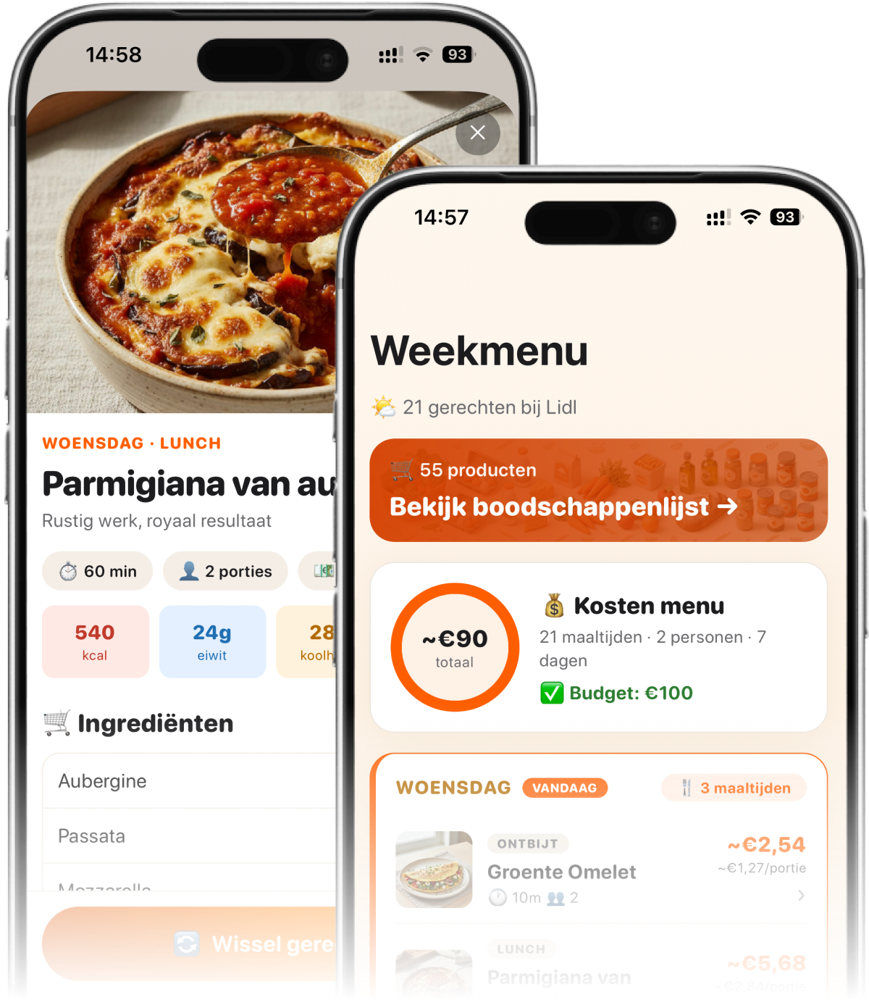
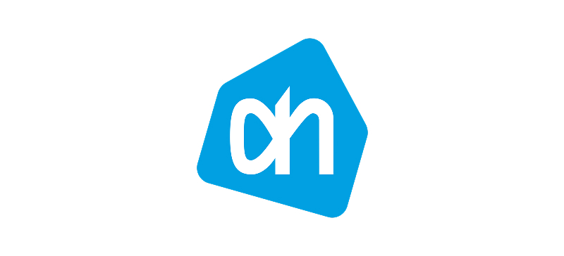
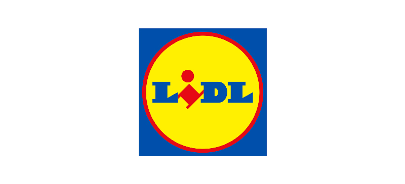
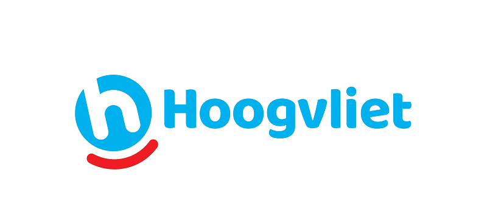
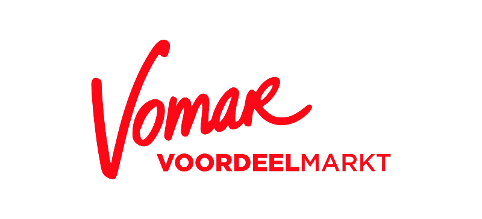

Smakelijke previews
Een foto van elk gerecht
Alle 180+ recepten hebben een eigen foto. Je weekmenu ziet er net zo goed uit als het smaakt.


Mealy maakt je weekmenu, schrijft je boodschappenlijst en rekent af met verspilling, met échte schapprijzen van 10 Nederlandse supermarkten.





Beantwoord een paar korte vragen en Mealy doet de rest.
Dieet, allergieën, budget, gezinsgrootte en je favoriete supermarkten. Twee minuten, één keer.
Een gevarieerde week uit 180+ recepten met foto, duidelijke stappen en de prijs per portie.
Je ingrediënten worden één lijst, gesorteerd per gangpad én per winkel. Niets vergeten, niets dubbel.
Plannen, koken en boodschappen doen: Mealy brengt de hele routine samen.
Ontbijt, lunch en diner afgestemd op jouw smaak en budget, elke week vers gepland.
Actuele prijzen van 10 supermarkten. Zie vooraf wat je week kost en waar hij goedkoper is.
Gesorteerd per gangpad en per winkel, met filters. Delen via WhatsApp kan ook, gewoon in het Nederlands.
Stel je weekbudget in en Mealy plant erbinnen, met lopende kostenteller tijdens het shoppen.
Gerecht niets voor jou? Shuffle voor een ander, of laat AI iets nieuws bedenken dat wél past.
Vegetarisch, veganistisch, notenallergie: geen suggestie maar een filter dat nooit doorbreekt.
Alle 180+ recepten hebben een eigen foto. Je weekmenu ziet er net zo goed uit als het smaakt.
Niet ons verhaal, maar dat van het Voedingscentrum en Milieu Centraal: wie plant, verspilt minder en koopt gerichter. Mealy maakt dat plannen moeiteloos en laat je besparing zien.
Bronnen: Voedingscentrum (2025), Milieu Centraal. Resultaten verschillen per huishouden.
Mealy zit in de testfase. Testers betalen niets: jouw feedback is de prijs.
Nee. Mealy werkt zonder registratie: geen e-mail, geen wachtwoord, geen profiel. Je voorkeuren staan op je eigen telefoon en je begint direct met plannen.
Tijdens de testfase: ja, helemaal. Na de officiële lancering wordt Mealy €9,99 per maand met 3 dagen gratis proberen. Testers horen dat ruim van tevoren.
Schapprijzen worden doorlopend ververst uit openbare bronnen. Een prijs met ~ is een schatting; zonder ~ is het de actuele schapprijs. Aanbiedingen in de winkel kunnen afwijken.
Albert Heijn, Jumbo, Lidl, PLUS, Dirk, Spar, Hoogvliet, DekaMarkt, Vomar en Poiesz. België en Duitsland staan op de planning.
Op je eigen telefoon. Mealy heeft geen accounts en verzamelt geen persoonsgegevens; onze servers (EU) verwerken alleen anonieme verzoeken. Lees het privacybeleid.
Ja: allergenen en diëten zijn een harde grens in de planning. Controleer bij ernstige allergieën altijd zelf de verpakking; recepten worden mede door AI samengesteld.